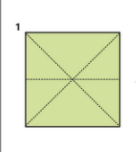
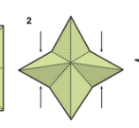
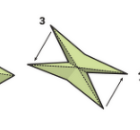
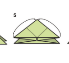
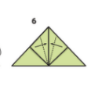

Step 1: Prepare Your Paper

Start with a square sheet of paper. Fold it in half vertically and then unfold.
Step 2: Make the First Fold

Fold the paper horizontally, creating a crease in the middle, and unfold.
Step 3: Create Creases

Fold the paper vertically again, bringing one side over to meet the other.
Step 4: Create Creases

Fold the top two corners of the rectangle down diagonally, forming two triangle flaps on each side.
Step 5: Create Creases

Open and flatten these triangles by pressing down on their centers, creating two smaller triangles at the top.
Step 6: Create Creases

Fold the bottom half of the paper upward so it covers part of the triangles, forming a small rectangle below the triangles.